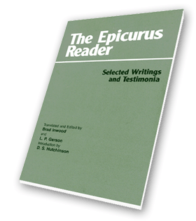

Do you want to be happy? Of course you do! Then what’s standing in your way?
Your happiness is entirely up to you. This has been revealed to us by a man of divine
serenity and wisdom who spent his life among us, and showed us, by his personal example
and by his teaching, the path to redemption from unhappiness. His name was Epicurus.
This is the sort of thing you might have heard an Epicurean preaching in the market
square of an ancient city. If it sounds like a religious message, that is no coincidence;
Epicurus was revered by his followers as though divine, a sage who had answers to all the
important questions of life. What attracted converts was the prospect of personal
happiness, for which Epicurus offered clear philosophical advice.
The fundamental obstacle to happiness, says Epicurus, is anxiety. No matter how rich or
famous you are, you won't be happy if you're anxious to be richer or more famous. No
matter how good your health is, you won't be happy if you're anxious about getting sick.
You can't be happy in this life if you're worried about the next life. You can't be happy
as a human being if you're worried about being punished or victimized by powerful divine
beings. But you can be happy if you believe in the four basic truths of
Epicureanism: there are no divine beings which threaten us; there is no next life; what we
actually need is easy to get; what makes us suffer is easy to put up with. This is the
so-called 'four-part cure', the Epicurean remedy for the epidemic sickness of human
anxiety; as a later Epicurean puts it, "Don't fear god, don't worry about death;
what's good is easy to get, and what's terrible is easy to endure."1
"What's good is easy to get." We need food, water, shelter from the elements,
and safety from hostile animals and people. All these things lie ready to hand and can be
acquired with little effort or money. We don't need caviar, champagne, palaces, or
bodyguards, which are expensive and difficult to acquire and keep. People who want more
than they need are making a fundamental mistake, a mistake that reduces their chances of
being satisfied and causes needless anxiety. While our bodies need food, water, shelter,
and safety, all that our souls need is to be confident that our bodies will get what they
need. If my body is contented and my soul is confident, then I will be cheerful, and being
cheerful is the key to being happy. As long as we are cheerful it takes very little to
keep us happy, but without cheerfulness we cannot really enjoy even the so-called
'pleasures' of life. Being cheerful is a state which is full of pleasure—indeed
Epicurus calls it 'the limit of pleasure'—and it is a normal state, but if we suffer
from anxiety we need to train ourselves to attain and maintain it. The discipline of
Epicurean philosophy enables its followers to recognize how little they actually need, to
enjoy possessing it, and to enjoy the confidence that they will continue to possess it. On
the other hand, there is no reason not to enjoy occasional luxuries, if they happen to be
easily available. There is nothing wrong with luxury in itself, but any dependence on
luxuries is harmful to our happiness, as is every desire for unnecessary things.
"What's terrible is easy to endure." There is no denying that illness and
pain are disagreeable, but nature has so constituted us that we need not suffer very much
from them. Sickness is either brief or chronic, and either mild or intense, but discomfort
that is both chronic and intense is very unusual; so there is no need to be concerned
about the prospect of suffering. This is admittedly a difficult teaching to accept,
especially for young people, but as people get older and more experienced in putting up
with suffering, they tend to recognize its truth more and more, as did the Roman
philosopher Seneca, whose health was anything but strong.2 Epicurus himself died in
excruciating pain, from kidney failure after two weeks of pain caused by kidney stones;
but he died cheerfully, he claimed, because he kept in mind the memory of his friends and
the agreeable experiences and conversations they had had together. Mental suffering,
unlike physical suffering, is agony to endure, but once you grasp the Epicurean philosophy
you won't need to face it again. Know the limits of what you need, recognize the limits of
what your body is likely to suffer, and enjoy the confidence that your life will be
overwhelmingly pleasant, unless you poison it with anxiety.
"Don't worry about death." While you are alive, you don't have to deal with
being dead, but when you are dead you don't have to deal with it either, because you
aren't there to deal with it. "Death is nothing to us," as Epicurus puts it, for
"when we exist, death is not yet present, and when death is present, then we do not
exist."3
Death is always irrelevant to us, even though it causes considerable anxiety to many
people for much of their lives. Worrying about death casts a general pall over the
experience of living, either because people expect to exist after their deaths and are
humbled and terrified into ingratiating themselves with the gods, who might well punish
them for their misdeeds, or else because they are saddened and terrified by the prospect
of not existing after their deaths. But there are no gods which threaten us, and,
even if there were, we would not be there to be punished. Our souls are flimsy things
which are dissipated when we die, and even if the stuff of which they were made were to
survive intact, that would be nothing to us, because what matters to us is the continuity
of our experience, which is severed by the parting of body and soul. It is not sensible to
be afraid of ceasing to exist, since you already know what it is like not to exist;
consider any time before your birth-was it disagreeable not to exist? And if there is
nothing bad about not existing, then there is nothing bad for your friend when he ceases
to exist, nor is there anything bad for you about being fated to cease to exist. It is a
confusion to be worried by your mortality, and it is an ingratitude to resent the
limitations of life, like some greedy dinner guest who expects an indefinite number of
courses and refuses to leave the table.
"Don't fear god." The gods are happy and immortal, as the very concept of
'god' indicates. But in Epicurus' view, most people were in a state of confusion about the
gods, believing them to be intensely concerned about what human beings were up to and
exerting tremendous effort to favour their worshippers and punish their mortal enemies.
No; it is incompatible with the concept of divinity to suppose that the gods exert
themselves or that they have any concerns at all. The most accurate, as well as the most
agreeable, conception of the gods is to think of them, as the Greeks often did, in a state
of bliss, unconcerned about anything, without needs, invulnerable to any harm, and
generally living an enviable life. So conceived, they are role models for Epicureans, who
emulate the happiness of the gods, within the limits imposed by human nature.
"Epicurus said that he was prepared to compete with Zeus in happiness, as long as he
had a barley cake and some water."4
If, however, the gods are as independent as this conception indicates, then they will
not observe the sacrifices we make to them, and Epicurus was indeed widely regarded as
undermining the foundations of traditional religion. Furthermore, how can Epicurus explain
the visions that we receive of the gods, if the gods don't deliberately send them to us?
These visions, replies Epicurus, are material images travelling through the world, like
everything else that we see or imagine, and are therefore something real; they travel
through the world because of the general laws of atomic motion, not because god sends
them. But then what sort of bodies must the gods have, if these images are always
streaming off them, and yet they remain strong and invulnerable? Their bodies, replies
Epicurus, are continually replenished by images streaming towards them; indeed the 'body'
of a god may be nothing more than a focus to which the images travel, the images that
later travel to us and make up our conception of its nature.5
If the gods do not exert themselves for our benefit, how is it that the world around us
is suitable for our habitation? It happened by accident, said Epicurus, an answer that
gave ancient critics ample opportunity for ridicule, and yet it makes him a thinker of a
very modern sort, well ahead of his time. Epicurus believed that the universe is a
material system governed by the laws of matter. The fundamental elements of matter are
atoms,6 which
move, collide, and form larger structures according to physical laws. These larger
structures can sometimes develop into yet larger structures by the addition of more
matter, and sometimes whole worlds will develop. These worlds are extremely numerous and
variable; some will be unstable, but others will be stable. The stable ones will persist
and give the appearance of being designed to be stable, like our world, and living
structures will sometimes develop out of the elements of these worlds. This theory is no
longer as unbelievable as it was to the non-Epicurean scientists and philosophers of the
ancient world, and its broad outlines may well be true.
We happen to have a great deal of evidence about the Epicurean philosophy of nature,
which served as a philosophical foundation for the rest of the system. But many Epicureans
would have had little interest in this subject, nor did they need to, if their curiosity
or scepticism did not drive them to ask fundamental questions. What was most important in
Epicurus' philosophy of nature was the overall conviction that our life on this earth
comes with no strings attached; that there is no Maker whose puppets we are; that there is
no script for us to follow and be constrained by; that it is up to us to discover the real
constraints which our own nature imposes on us. When we do this, we find something very
delightful: life is free, life is good, happiness is possible, and we can enjoy the bliss
of the gods, rather than abasing ourselves to our misconceptions of them.
To say that life is free is not to say that we don't need to observe any moral
constraints. It is a very bad plan to cheat on your friends or assault people in the
street or do anything else that would cause you to worry about their reactions. Why is
this a bad plan? Not because god has decreed that such things are ‘immoral’, but
because it is stupid to do anything that would cause you to worry about anything. In the
view of some moral philosophers (both ancient and modern) this view makes Epicureanism an
immoral philosophy, because it denies that there is anything intrinsically wrong with
immoral conduct. If we could be sure that nobody would find out, then we would have no
reason to worry about the consequences, and therefore no reason not to be immoral. True,
admits Epicurus, but we can never be sure that nobody will find out, and so the most
tranquil course is to obey the rules of social morality quite strictly. These have been
developed over the centuries for quite understandable reasons, mostly to give ourselves
mutual protection against hostile animals and people. The legal and moral rules of society
serve a good purpose, although it is not worthwhile to exert yourself to become prominent
in public affairs and have the anxiety of public office. Much more satisfying and valuable
is to develop individual relationships of mutual confidence, for a friend will come to
your assistance when an ordinary member of the public will not. In fact, friends are our
most important defence against insecurity and are our greatest sources of strength, after
the truths of Epicurean philosophy itself.
Friends and philosophy are the two greatest resources available to help us live our
lives in confidence and without anxiety. Perhaps the best thing of all would be to have
friends who shared our Epicurean philosophy with us; many Epicureans lived in small
Epicurean communities, as did the followers of Pythagoras in earlier times. These
Epicurean communities were probably modelled on the community that Epicurus established on
the outskirts of Athens, called "The Garden." We know very little about the
organization of these communities, except that they did not require their members to give
up their private property to the commune (unlike the Pythagoreans and some modern
religious cults) and that they probably involved regular lessons or discussions of
Epicurean philosophy. They also included household servants and women on equal terms with
the men, which was completely out of line with the social norms of the time, but Epicurus
believed that humble people and women could understand and benefit from his philosophy as
well as educated men, another respect in which Epicurean philosophy was well ahead of its
time.
The membership of women caused scandalous rumours, spread by hostile sources, that
"The Garden" was a place for continuous orgies and parties, rumours apparently
supported by Epicurus' thesis that bodily pleasure is the original and basic form of
pleasure. But Epicurus believed in marriage and the family, for those who are ready for
the responsibility, and he disapproved of sexual love, because it ensnares the lover in
tangles of unnecessary needs and vulnerabilities. Here's the typical pattern: first lust,
then infatuation, then consummation, then jealousy or boredom. There’s only anxiety
and distress in this endlessly repeated story, except for the sex itself, and Epicurus
regarded sex as an unnecessary pleasure, which never did anybody any real good—count
yourself lucky if it does you no harm!7 There is nothing intrinsically wrong with casual sex, but
much more important than either love or sex is friendship, which "dances around the
world, announcing to all of us that we must wake up to blessedness."8
One of the remarkable features of Epicurus' philosophy is that it can be understood at
several levels of subtlety. You don't need to be a philosophical genius to grasp the main
points, which is why Epicurus coined slogans and maxims for ordinary people to memorize,
to help them relieve their anxiety whenever it might arise. There were signet rings and
hand mirrors, for example, engraved with the words 'death is nothing', so the faithful
could be reminded while going about their daily business. Suppose, though, that you're not
convinced that 'death is nothing', for example, and you want proof before you organize
your life around that idea. For people like you, Epicurus wrote letters outlining his
basic arguments, which circulated freely among those interested in the topic. Suppose,
again, that you already have a philosophical education, and you want to assess Epicurus
arguments against the competing arguments, from other philosophers, for example. For this
purpose he wrote elaborately careful and thorough memoranda of his arguments; his main
treatise on natural philosophy ran to a staggering thirty-seven volumes. This extremely
long book was given an intermediate (but still quite detailed) summary by Epicurus, and
there may have been other levels of length and subtlety. If on a certain topic all our
evidence seems superficial, that is probably because the more extensive discussions of
that topic have not survived.
* * * * *
Modern students of Epicureanism should know the status of the available evidence. None
of Epicurus' major works survives in its entirety, but of his many abbreviations and
summaries, three survive because they are quoted in Lives and Sayings of Famous
Philosophers, by Diogenes Laertius, an otherwise unknown third-century-A.D. compiler.
The most important of these is the Letter to Menoeceus (text 4), which gives the
basic outline of the Epicurean approach to personal happiness. The Letter to Herodotus (text
2) gives the basic outline of the Epicurean materialist philosophy of nature, and the Letter
to Pythocles (text 3) concerns the natural phenomena of the sky (which many felt were
the work of the gods). These letters can be trusted to reflect Epicurus own views and way
of arguing, as can the so-called "Principal Doctrines" (text 5), a group of
forty short and pithy remarks, which were collected so that the basic principles of the
Epicurean system could be easily memorized. A similar collection, the so-called
"Vatican Sayings" (text 6), is a mixture of sayings from Epicurus and other
Epicureans, and we print the sayings that seem likely to have come from Epicurus himself.
The picture that emerges from this evidence can be somewhat enlarged with fragments
from Epicurus' works. In some cases, these are literally fragments, charred and brittle
pieces of papyrus (the ancient equivalent of writing paper) excavated from a villa in
Herculaneum which was engulfed by the eruption of Mt. Vesuvius in A.D. 79. Their damaged
state explains the numerous gaps ('lacunae') in our text of part of Book 25 of Epicurus' On
Nature (text 34). Other fragments are small portions of Epicurus works quoted by other
Epicurean writers, such as Philodemus of Gadara, whose charred books were also found in
Herculaneum. Still other fragments are small portions of Epicurus' works quoted by other
ancient authors whose works survived in the ordinary way, by being copied from handwritten
book to handwritten book. Sometimes the source tells us which treatise or letter he is
quoting from (texts 30 to 64). In other cases we cannot know what work the quotation comes
from (texts 65 to 159).
Not all quotations can be taken to be accurate, word-for-word citations from Epicurus.
We have indicated, by using quotation marks, where we thought the source was purporting to
quote Epicurus, but ancient standards of accuracy were not as rigorous as modern ones,
especially when ancient writers were attacking their intellectual enemies. Other sources
don't even purport to quote Epicurus exact words, and we need to be yet more careful with
these reports, which are referred to as 'testimonia'. Readers should regard purported
quotations as generally more reliable than testimonia, but should always prefer Epicurus'
own texts to both these other kinds of evidence. Fortunately, most of the evidence
coheres, and it is usually possible to reach a reasonable assessment of Epicurus' views,
at least on the topics where evidence is available.
We also have long discussions of Epicureanism from the pen of the well-known
philosopher Cicero, who discussed Epicureanism in several of his books (texts 15 to 26).
Cicero was not himself an Epicurean, and he was content to rely on Epicurean handbooks of
a period close to his time. Sometimes Cicero does not really understand what he is
transmitting (though that doesn't stop him from arguing against it), and in these cases
especially we can be confident that he is faithfully paraphrasing his Epicurean source.
But what he transmits is only what he selects from his Epicurean source, and his source is
not Epicurus himself but a later (more or less orthodox) follower. Plutarch, another
well-known philosopher, was a more scholarly-and a more hostile-critic, who argued against
the Epicurean philosophy with all the devices of argument (legitimate and illegitimate) at
his command. There are more quotations from Epicurus in Plutarch than in Cicero, but the
Epicurean way of thinking is more distorted, because Plutarch's purpose is to ridicule it,
by belittling it element by element. The most useful evidence from Plutarch comes in his
attack on the book written by Colotes, an early follower of Epicurus (text 29), but there
is evidence also in his critique of the self-effacing Epicurean life-style, Is 'Live
inconspicuously' a wise precept?, and in his polemical essay called It is quite
impossible to enjoy life on Epicurean principles.
By far the most useful body of evidence that is not transmitted in our Reader is
a poem by Lucretius, a Roman Epicurean of the first half of the first century B.C. This is
a long didactic poem in six books, called De Rerum Natura (On the Nature of Things), which
sets out in Latin verse the Epicurean philosophy of nature, drawing an occasional
liberating and anti-superstitious lesson. It is a classic of world literature, which
impresses as much by its rich poetic qualities as by the rigour of its thought. But it is
not possible to know exactly how reliable it is as a source for the views of Epicurus,
since the so-called Major Summary (a detailed summary of Epicurus'
thirty-seven-volume On Nature), on which it seems to have been based, has
entirely perished. We print two particularly important passages which do seem to
have been drawn quite directly from Epicurus own works (texts 27 and 28), but
probably most of Lucretius' poem reflects Epicurus' views equally well. A good
example is Book III, lines 83-1094, which offers the arguments for believing
that 'death is nothing to us'; although we cannot be certain that Lucretius is
not introducing new ideas, there is nothing here that is incompatible with
Epicurus' known views. A comprehensive study of Epicureanism would include the
poem of Lucretius among its main body of evidence, and we recommend that our
readers read it in the excellent recent translation, with introduction and
notes, by M. F. Smith:
Lucretius, On the Nature of Things (Hackett, 2001).
* * * * *
Epicurus developed a system of philosophy and a way of living that deserve our
respect and understanding, perhaps even our allegiance. This way of living claimed many
thousands of committed followers, all over the ancient Mediterranean world, in cooperative
communities that lasted for hundreds of years. But from the very beginning of his teaching
mission, his message was opposed and distorted, first by academic philosophers and
political authorities, and later by Christians. Epicureans apparently almost never
switched their allegiance to other philosophical systems, whereas other schools regularly
lost students to the Epicureans. Why? Perhaps because the Epicureans found that their
system made excellent sense. But the explanation offered by Arcesilaus, Epicurus' rival,
is typically dismissive: "You can turn a man into a eunuch, but you can't turn a
eunuch into a man."9
Even in modern times, the critics of Epicureanism continue to misrepresent it as a
lazy-minded, shallow, pleasure-loving, immoral, or godless travesty of real philosophy. In
our day the word 'epicureanism' has come to mean its opposite-a pretentious enthusiasm for
rare and expensive food and drink. Please have the courage to ignore two thousand years of
negative prejudice, and assess this philosophy on its own considerable merits. This book
gives you the evidence you need.
D.S. Hutchinson
Trinity College
University of Toronto
Notes:
1. Philodemus of Gadara, from a work whose title is
uncertain, preserved in Herculaneum Papyrus 1005, column W, lines 10-14.
2. Seneca, Letters to Lucilius lxxviii.7-10.
3. Epicurus, Letter to Menoeceus (text 4),
section 125.
4. Aelian, Miscellaneous Histories, 4.13 (text
159).
5. This is only a suggestion; it is not easy to
understand the Epicurean conception of the nature of the gods, and readers should be aware
that modern scholars do not agree about the correct interpretation of the evidence.
6. He borrowed this hypothesis from Democritus, an
earlier atomist, and it was borrowed in turn from Epicurus by Pierre Gassendi, who
introduced the atomic theory into modern science in the seventeenth century.
7. Diogenes Laertius, Lives and Sayings of Famous
Philosophers x.i 18 (text 8).
8. Epicurus, Vatican Sayings (text 6)
#52; cf. Principal Doctrines (text 5) #27.
9. Diogenes Laertius, Lives and Sayings of Famous
Philosophers iv.43. Arcesilaus was the Head of the Platonic Academy in Epicurus' day.

|